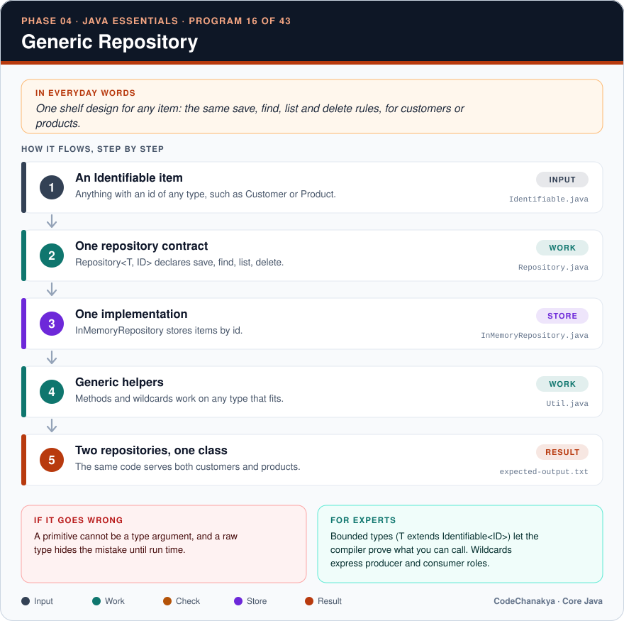

Phase 04 · Java Essentials · Program 16 of 43
Generic Repository
The problem
Customers, products and orders all need save, find and list. Copying a store per type means keeping several classes in step.
A generic repository is written once for any type, and the compiler rejects a product in the customer store.
See the flow
The whole program as one picture. Read it top to bottom; the colour of each card says what kind of step it is.


If you are new to coding
One shelf design for any item: the same save, find, list and delete rules, for customers or products.
If you are learning
Follow the numbered cards from top to bottom. Open the file named on each card, run the program, and match its output to the last card.
If you are experienced
Bounded types (T extends Identifiable<ID>) let the compiler prove what you can call. Wildcards express producer and consumer roles.
Text version of the flow
- An Identifiable item (input): Anything with an id of any type, such as Customer or Product.
- One repository contract (work): Repository<T, ID> declares save, find, list, delete.
- One implementation (store): InMemoryRepository stores items by id.
- Generic helpers (work): Methods and wildcards work on any type that fits.
- Two repositories, one class (result): The same code serves both customers and products.
Read in this order
- 1Repository.javaTwo type parameters and a bound.
- 2InMemoryRepository.javaThe one implementation.
- 3Util.javaGeneric methods and wildcards.
- 4Pair.javaTwo independent parameters.
The code
package com.codechanakya.repository; import java.util.List; /** * A place to store and find things of one type. * * Two type parameters: T is what is stored, ID is how it is looked up. * "T extends Identifiable<ID>" is a bound. It restricts T to types that have * a getId() of the matching kind, which is what lets the repository use * item.getId() without knowing anything else about T. * * Write this once and you have a repository for customers, products, orders * and everything you add later. */ public interface Repository<T extends Identifiable<ID>, ID> { /** Stores the item. An item with the same id replaces the old one. */ void save(T item); /** Returns the item with this id, or null when there is none. */ T findById(ID id); List<T> findAll(); /** Removes the item. Returns false when nothing had that id. */ boolean delete(ID id); int count(); }
package com.codechanakya.repository; import java.util.ArrayList; import java.util.LinkedHashMap; import java.util.List; import java.util.Map; /** * A repository that keeps everything in memory. * * A Map stores values under keys. LinkedHashMap remembers the order things * were added, so listings come out in a predictable order. Phase 5 covers maps. * A database-backed repository in Phase 9 will implement the same interface, * and code that uses Repository will not need to change. */ public class InMemoryRepository<T extends Identifiable<ID>, ID> implements Repository<T, ID> { private final Map<ID, T> items = new LinkedHashMap<>(); @Override public void save(T item) { items.put(item.getId(), item); } @Override public T findById(ID id) { return items.get(id); } @Override public List<T> findAll() { // A copy, so callers cannot change our storage by editing the list they get. return new ArrayList<>(items.values()); } @Override public boolean delete(ID id) { return items.remove(id) != null; } @Override public int count() { return items.size(); } }
package com.codechanakya.repository; import java.util.List; /** Small generic helpers, one for each flavour of generic method. */ public final class Util { private Util() { } /** * The largest item in a non-empty list. * * "T extends Comparable<T>" is the bound: only types that can be compared * with themselves are allowed, because the method calls compareTo. * Strings, Integers and our Product qualify. A type with no ordering, such * as Customer, is rejected by the compiler. */ public static <T extends Comparable<T>> T maxOf(List<T> items) { T best = items.get(0); for (T item : items) { if (item.compareTo(best) > 0) { best = item; } } return best; } /** Swaps two positions in an array of any reference type. The compiler works out T from the argument. */ public static <T> void swap(T[] array, int i, int j) { T temp = array[i]; array[i] = array[j]; array[j] = temp; } /** * Adds up any list of numbers as doubles. Fine for counts and measurements, * never for money; use BigDecimal for that. * * "? extends Number" is a wildcard: a list of some unknown type that is * a Number. We can read Numbers out of it, but could not safely add to it. */ public static double sum(List<? extends Number> numbers) { double total = 0; for (Number number : numbers) { total += number.doubleValue(); } return total; } /** Prints a list of anything. "?" means "I do not care what the elements are". */ public static void printAll(String title, List<?> items) { System.out.println(title + " (" + items.size() + ")"); for (Object item : items) { System.out.println(" " + item); } } }
Only the key files are shown. The rest are in the repository.
Run it
$ ./run.sh --check
Customers (3)
C-101 Asha Menon (Pune)
C-102 Rahul Verma (Mumbai)
C-103 Meera Iyer (Chennai)
Products (3)
1 Laptop Stand 1299.00
2 Mechanical Keyboard 3499.00
3 Wireless Mouse 899.00
--- Finding and deleting ---
Customer C-102: C-102 Rahul Verma (Mumbai)
Customer C-999: null
Product 3: 3 Wireless Mouse 899.00
Delete product 2: true
Delete product 2 again: false
Products left: 2
--- Saving with an existing id replaces ---
C-101 is now: C-101 Asha Menon (Bengaluru)
Customers still: 3
--- Bounded generic methods ---
Most expensive product: 1 Laptop Stand 1299.00
Last name alphabetically: Rahul
After swap: third, second, first
Sum of counts: 27.0
Sum of weights: 3.75
A pair: (Laptop Stand, 12), name length 12, doubled count 24
OK: output matches expected-output.txt
This is the real output from OpenJDK 21.0.13 on Linux. It has not yet been run on Java 25, Windows or macOS.
Try it yourself
- BeginnerSave a fourth customer.
- BeginnerAdd a default exists() method.
- BeginnerPrint the customer count.
- IntermediateAdd minOf().
- IntermediateAdd sorted().
- ChallengeWrite a Cache with a fixed capacity.
Hints and solutions are in the exercises and solutions folders. Try first.
Break it on purpose
Three files: a primitive type argument, the wrong type in a list, and a raw type that crashes later. The README in the broken folder explains each one.